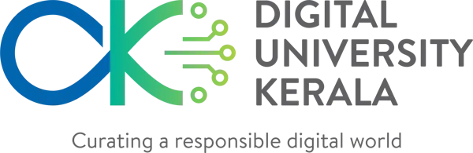
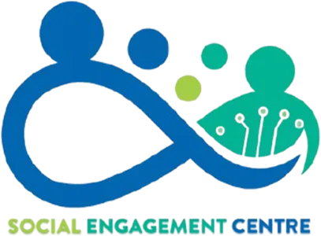
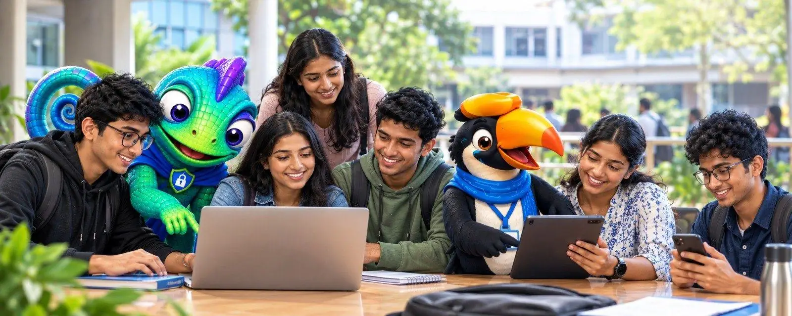
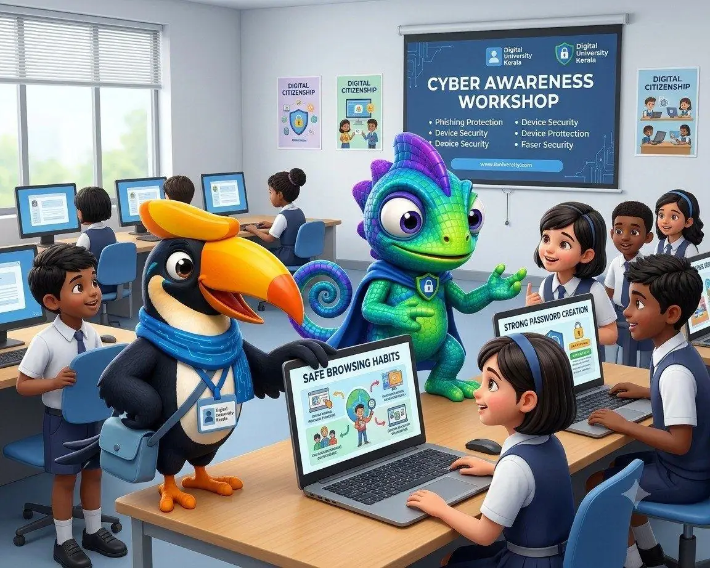
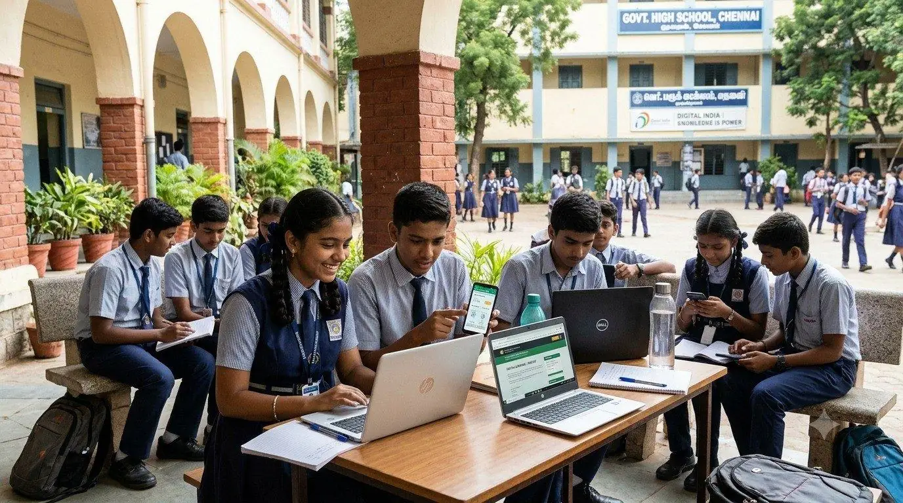

SG
ഡിജിറ്റൽ യൂണിവേഴ്സിറ്റി കേരളയുടെ സംരംഭം
വിദ്യാർത്ഥികൾക്കുള്ള സൈബർ സുരക്ഷ, യഥാർത്ഥ തട്ടിപ്പുകളെ അടിസ്ഥാനമാക്കി.
ഡിജിറ്റൽ യൂണിവേഴ്സിറ്റി ഓഫ് കേരളയിലെ സോഷ്യൽ എൻഗേജ്മെന്റ് സെന്ററിന്റെ പ്രായോഗിക സൈബർ ബോധവത്കരണ പദ്ധതിയാണ് ഡിജിസേഫ് കേരളം. 10–19 വയസ്സുള്ള വിദ്യാർത്ഥികൾ ഓൺലൈൻ തട്ടിപ്പുകൾ തിരിച്ചറിയാനും അക്കൗണ്ടുകൾ സംരക്ഷിക്കാനും ആത്മവിശ്വാസത്തോടെ പ്രതികരിക്കാനും പഠിക്കുന്നു.
എന്തുകൊണ്ട് ഡിജിസേഫ്ഡിജിറ്റൽ യൂണിവേഴ്സിറ്റി കേരളയിൽ വികസിപ്പിച്ചത്യഥാർത്ഥവും പ്രാദേശികവുമായ സാഹചര്യങ്ങൾഎല്ലാ വിദ്യാർത്ഥികൾക്കും ലഭ്യംഇംഗ്ലീഷും മലയാളവും
പദ്ധതിയെക്കുറിച്ച്
കേരളത്തിലെ ഓരോ വിദ്യാർത്ഥിക്കും ഡിജിറ്റൽ സുരക്ഷ ഒരു ശീലമാക്കാം
ഫോണുകൾ, ഗെയിമുകൾ, സോഷ്യൽ മീഡിയ, വിശ്വസിക്കുന്നവരുടെ സന്ദേശങ്ങൾ എന്നിവയിലൂടെ ഓൺലൈൻ തട്ടിപ്പ് ഇന്ന് വിദ്യാർത്ഥികളിലേക്ക് എത്തുന്നു. അപകടത്തിനൊപ്പം അവബോധം വളർന്നിട്ടില്ല.
യഥാർത്ഥ തട്ടിപ്പ് രീതികളെ അടിസ്ഥാനമാക്കിയ ചെറുതും പ്രായോഗികവുമായ പാഠങ്ങളിലൂടെ ഡിജിസേഫ് കേരളം ഈ വിടവ് നികത്തുന്നു. നിൽക്കാനും ഉറപ്പാക്കാനും പ്രവർത്തിക്കാനും വിദ്യാർത്ഥികൾ പഠിക്കുന്നു; സമ്മർദ്ദവും വഞ്ചനയും എങ്ങനെ പ്രവർത്തിക്കുന്നു എന്ന് സിമുലേറ്റഡ് തട്ടിപ്പുകാരൻ കാണിച്ചുതരുന്നു.
ഡിജിറ്റൽ യൂണിവേഴ്സിറ്റി കേരളയിലെ സോഷ്യൽ എൻഗേജ്മെന്റ് സെന്ററും വിദ്യാർത്ഥി ടീമും ചേർന്നാണ് പദ്ധതി രൂപകൽപ്പന ചെയ്ത് വികസിപ്പിക്കുന്നത്; സംസ്ഥാനത്തെ സ്കൂളുകളിൽ നിന്നും കോളേജുകളിൽ നിന്നും തുടങ്ങുന്നു.
സോഷ്യൽ എൻഗേജ്മെന്റ് സെന്റർ, ഡിജിറ്റൽ യൂണിവേഴ്സിറ്റി കേരള
01
അവബോധം
വിദ്യാർത്ഥികൾ യഥാർത്ഥത്തിൽ നേരിടുന്ന തട്ടിപ്പുകളുടെ വ്യക്തമായ വിശദീകരണം.
02
പരിശീലനം
അറിവിനെ ശീലമാക്കുന്ന സാഹചര്യങ്ങൾ, ക്വിസുകൾ, ബാഡ്ജുകൾ.
03
ലഭ്യത
ദ്വിഭാഷ, കേരളത്തിലെ ഓരോ പഠിതാവിനും ലഭ്യം.
ഇങ്ങനെയാണ് പ്രവർത്തിക്കുന്നത്
പഠിക്കൂ. പരീക്ഷിക്കൂ. നേടൂ.
ചെറിയ മൊഡ്യൂൾ എടുക്കൂ
യഥാർത്ഥ തട്ടിപ്പ് ഉദാഹരണങ്ങളെ അടിസ്ഥാനമാക്കിയ ചെറിയ പാഠങ്ങൾ. നിങ്ങളുടെ വേഗത്തിൽ പഠിക്കാം.
സ്വയം പരിശോധിക്കൂ
ചെറു ക്വിസുകൾ എന്താണ് ഓർമ്മയിലുള്ളതെന്ന് കാണിക്കും — സമ്മർദ്ദമില്ല, എപ്പോൾ വേണമെങ്കിലും വീണ്ടും എഴുതാം.
ബാഡ്ജുകൾ നേടൂ
ക്വിസോ കോഴ്സോ വിജയിച്ച് നിങ്ങൾ നേടിയ അറിവ് കാണിക്കുന്ന ബാഡ്ജ് സ്വന്തമാക്കൂ.
നിങ്ങളുടെ വഴികാട്ടികൾ
റേയോടൊപ്പം പഠിക്കൂ. റോഗിനെപ്പോലെ ചിന്തിക്കൂ.
സുരക്ഷിത ശീലങ്ങൾ പഠിപ്പിക്കുന്ന ഒരു സൗഹൃദ വഴികാട്ടി. തട്ടിപ്പുകൾ എങ്ങനെ ഒരുക്കുന്നു എന്ന് കാണിക്കുന്ന ഒരു സിമുലേറ്റഡ് തട്ടിപ്പുകാരൻ.

റേ — നിങ്ങളുടെ സുരക്ഷാ വഴികാട്ടി
ശാന്തനും പ്രായോഗികനും നിങ്ങളുടെ പക്ഷത്തുള്ളവനും.
- മുന്നറിയിപ്പ് സൂചനകൾ നേരത്തേ തിരിച്ചറിയൂ
- ലളിതമായ സംരക്ഷണ മാർഗങ്ങൾ ഉപയോഗിക്കൂ
- ക്രമേണ ആത്മവിശ്വാസം വളർത്തൂ

റോഗ് — സിമുലേറ്റഡ് തട്ടിപ്പുകാരൻ
അവരുടെ തന്ത്രങ്ങൾ കാണിച്ചുതരുന്നു, നിങ്ങൾക്ക് അവയെ തോൽപ്പിക്കാം.
- തിരക്ക് കൂട്ടിക്കുന്നു
- വിശ്വസ്തനായി നടിക്കുന്നു
- നിയന്ത്രണം കൈക്കലാക്കാൻ ശ്രമിക്കുന്നു
സംരംഭത്തെക്കുറിച്ച്
ഡിജിറ്റൽ യൂണിവേഴ്സിറ്റി ഓഫ് കേരളയിൽ നിർമ്മിച്ചത്
ഡിജിറ്റൽ യൂണിവേഴ്സിറ്റി ഓഫ് കേരളയിലെ സോഷ്യൽ എൻഗേജ്മെന്റ് സെന്ററിന്റെ സംരംഭമാണ് ഡിജിസേഫ് കേരളം. ഡിജിറ്റൽ സുരക്ഷാ അറിവ് കേരളത്തിലെ എല്ലാവർക്കും പ്രായോഗികവും ലഭ്യവുമാക്കുക എന്നതാണ് ലക്ഷ്യം, ആദ്യം വിദ്യാർത്ഥികളിൽ നിന്ന് തുടങ്ങുന്നു.
പ്രായോഗികംയഥാർത്ഥ സാഹചര്യങ്ങൾ
ദ്വിഭാഷഇംഗ്ലീഷും മലയാളവും
എല്ലാവർക്കുംഓരോ പഠിതാവിനും


നേതൃത്വം
ഡിജിറ്റൽ യൂണിവേഴ്സിറ്റി കേരളയുടെ മാർഗനിർദേശത്തിൽ
സർവകലാശാലയുടെ നേതൃത്വത്തിന്റെ പിന്തുണയോടെയാണ് ഡിജിസേഫ് കേരളം പ്രവർത്തിക്കുന്നത്.
AM
ഗാലറി
ഡിജിസേഫ് ചിത്രങ്ങളിൽ
പഠനവും ബോധവത്കരണവും, അതിനെ നയിക്കുന്ന കഥാപാത്രങ്ങളും.




അഭിപ്രായങ്ങൾ
പഠിതാക്കൾ പറയുന്നത്
ഈ സാഹചര്യങ്ങൾ എന്റെ ഫോണിൽ ശരിക്കും സംഭവിക്കുന്നവ തന്നെയാണ്. ഇപ്പോൾ ക്ലിക്ക് ചെയ്യുന്നതിന് മുമ്പ് ഞാൻ നിന്ന് പരിശോധിക്കും.
ചെറിയ പാഠങ്ങൾ, സാങ്കേതിക പദങ്ങളില്ല. ക്ലാസുകൾക്കിടയിൽ ഒരെണ്ണം തീർത്തു.
റേ കൂടെയുള്ളതുപോലെ തോന്നിക്കുന്നു, തട്ടിപ്പുകാർ എങ്ങനെ സമ്മർദ്ദം ചെലുത്തുന്നു എന്ന് റോഗ് കൃത്യമായി കാണിക്കുന്നു.
എന്തെങ്കിലും സംഭവിച്ചാൽ
തട്ടിപ്പിനിരയായെന്ന് തോന്നുന്നുണ്ടോ? വേഗം പ്രവർത്തിക്കൂ.
വേഗത്തിൽ റിപ്പോർട്ട് ചെയ്യുന്നത് നഷ്ടം തടയാൻ ഏറ്റവും സഹായിക്കും. സഹായം ചോദിക്കുന്നതിൽ ഒരിക്കലും കുറ്റമില്ല.
- 1നിർത്തൂ. കൂടുതൽ പണമോ കോഡോ പാസ്വേഡോ നൽകരുത്.
- 2രക്ഷിതാവിനെയോ അധ്യാപകരെയോ വിശ്വസ്തനായ മറ്റൊരാളെയോ അറിയിക്കൂ.
- 3കാർഡോ അക്കൗണ്ടോ ബ്ലോക്ക് ചെയ്യാൻ ബാങ്കിനെ വിളിക്കൂ.
- 41930 വിളിക്കൂ, അല്ലെങ്കിൽ cybercrime.gov.in ൽ റിപ്പോർട്ട് ചെയ്യൂ.
സംശയങ്ങൾ
നിങ്ങളുടെ ചോദ്യങ്ങൾക്ക് ഉത്തരം
ഡിജിസേഫ് കേരളം ആർക്കുള്ളതാണ്?
ആദ്യം 10–19 വയസ്സുള്ള വിദ്യാർത്ഥികൾക്ക്, പിന്നെ കേരളത്തിലെ എല്ലാ പഠിതാക്കൾക്കും. നിത്യജീവിത സാഹചര്യങ്ങളാണ് പാഠങ്ങളിൽ; സാങ്കേതിക പശ്ചാത്തലം വേണ്ട.
ആരാണ് ഈ പദ്ധതി നടത്തുന്നത്?
ഡിജിറ്റൽ യൂണിവേഴ്സിറ്റി കേരളയിലെ സോഷ്യൽ എൻഗേജ്മെന്റ് സെന്ററിന്റെ സംരംഭമാണിത്; ഒരു വിദ്യാർത്ഥി ടീമിനൊപ്പം വികസിപ്പിക്കുന്നു.
ഏതൊക്കെ ഭാഷകളിൽ ലഭ്യമാണ്?
ഇംഗ്ലീഷിലും മലയാളത്തിലും. ഹെഡറിലെ ഭാഷാ ബട്ടൺ ഉപയോഗിച്ച് എപ്പോൾ വേണമെങ്കിലും മാറ്റാം.
ഇപ്പോൾ പഠിച്ചുതുടങ്ങാമോ?
അതെ. ആമുഖ വീഡിയോകൾ പഠിക്കാം പേജിലുണ്ട്. കോഴ്സുകളും ക്വിസുകളും ബാഡ്ജുകളുമുള്ള പൂർണ്ണ പ്ലാറ്റ്ഫോം ഉടൻ വരുന്നു.
എങ്ങനെ രജിസ്റ്റർ ചെയ്യാം?
പഠന പ്ലാറ്റ്ഫോം ആരംഭിക്കുമ്പോൾ രജിസ്ട്രേഷൻ തുറക്കും. അതുവരെ പഠിക്കാം പേജിലെ വീഡിയോകൾ കാണൂ.
ഇതിനകം തട്ടിപ്പിനിരയായെങ്കിൽ എന്ത് ചെയ്യണം?
പണമോ കോഡോ നൽകുന്നത് നിർത്തൂ, വിശ്വസ്തനായ ഒരാളെ അറിയിക്കൂ, ബാങ്കിനെ വിളിക്കൂ, തുടർന്ന് 1930 വിളിക്കൂ അല്ലെങ്കിൽ cybercrime.gov.in ൽ റിപ്പോർട്ട് ചെയ്യൂ.
ഉടൻ ആരംഭിക്കുന്നു
പൂർണ്ണ പഠന പ്ലാറ്റ്ഫോം ഉടൻ വരുന്നു
കോഴ്സുകൾ എടുക്കാനും ക്വിസുകളിലൂടെ സ്വയം പരിശോധിക്കാനും ബാഡ്ജുകൾ നേടാനും — ഇംഗ്ലീഷിലോ മലയാളത്തിലോ, നിങ്ങളുടെ വേഗത്തിൽ — കഴിയുന്ന ഇടം ഞങ്ങൾ ഒരുക്കുകയാണ്. തുടങ്ങാൻ കാത്തിരിക്കേണ്ട: ആമുഖ വീഡിയോകൾ പഠിക്കാം പേജിലുണ്ട്.
- ആമുഖ വീഡിയോകൾറേ, റോഗ്, ഡിജിസേഫ് പ്രോജക്റ്റ് എന്നിവരെ പഠിക്കാം പേജിൽ പരിചയപ്പെടാം.പുരോഗമിക്കുന്നു
- ഇന്ററാക്ടീവ് കോഴ്സുകൾയഥാർത്ഥ ജീവിത ഉദാഹരണങ്ങളെ അടിസ്ഥാനമാക്കിയ ചെറിയ മൊഡ്യൂളുകൾ.പുരോഗമിക്കുന്നു
- ക്വിസുകളും പുരോഗതി ട്രാക്കിങ്ങുംഎന്തൊക്കെ പഠിച്ചു, എന്തൊക്കെ വീണ്ടും നോക്കണം എന്ന് കാണൂ.പുരോഗമിക്കുന്നു
- ബാഡ്ജുകളും നേട്ടങ്ങളുംപൂർത്തിയാക്കുന്ന ഓരോ കോഴ്സിനും അംഗീകാരം നേടൂ.പുരോഗമിക്കുന്നു
- ഇംഗ്ലീഷും മലയാളവുംനിങ്ങൾക്ക് ഏറ്റവും സൗകര്യമുള്ള ഭാഷയിൽ പഠിക്കൂ.പുരോഗമിക്കുന്നു